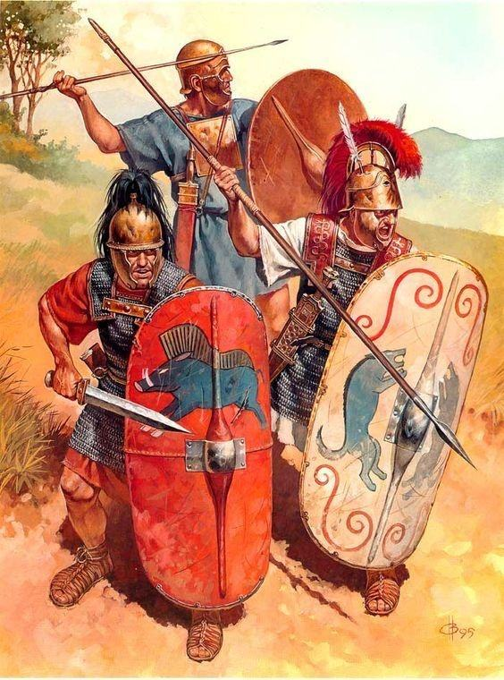
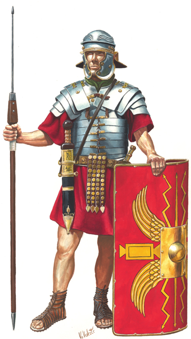
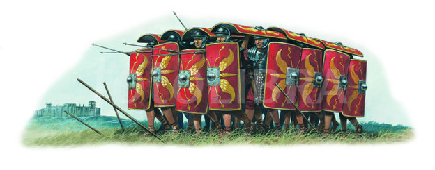

Het Romeinse leger stond zeer bekend om zijn effectiviteit.
Maar hoe ziet het leger er dan uit?
In dit hoofdstuk zullen we dit behandelen.
Voordat de Reformatie van Marius was doorgevoerd, ookwel de Ezelreformatie,
bestonden de Romeinse legers uit zwaardmannen, speermannen en speergooiers.
De zwaardmannen waren vaak Hastati
De Hastati bestond vooral uit de gemiddelde romeinse burger en was dus ook niet zeer goed bewapend.
Meestal droegen ze alleen een harnas en een helm, en hadden ze alleen een gladius en scutum.
Er waren ook Principés, dit waren de rijkere romeinen en de Principés droegen vaak ook kniebeschermers en nog betere harnassen.
Ook bestond het leger toen uit Triarii, dit waren speermannen, net zo wapend als de Hastati, alleen dan met een speer.
De speergooiers, vaak Velites, hadden alleen maar een tuniek en soms een leeuwenvacht. Zij gebruikte echter lange gooisperen,
Want de pillum was nog niet uitgevonden.

Na de reformatie kwamen de legionairs.
In het begin hadden ze alleen nog maar maliënkolder,
maar later kregen ze de harnassen van stalen platen.
Ook waren de rollen van speermannen en speergooiers niet meer voor de romeinen.
Nu werden troepen uit de omliggende landen die Rome hielpen, in het Romeins leger gedaan.
Deze werden Auxilairies genoemd, de romeinen zelf hadden nu alleen nog maar zwaardmannen.
Deze reformatie bracht ook met zich mee dat elke soldaat zijn eigen spullen moest dragen.
Er werden dus geen ezels meer meegenomen, en dus kon het Romeins leger sneller marcheren.
Hierdoor konden ze effectief naar het buitenland gaan en snel klaar zijn om een gevecht aan te gaan.

Ook de Romein gebruikte verschillende tactieken
Voor de Marius Reformatie gebruikte de romeinen een vaste tactiek, een lange schildmuur met gaten erin.
Deze gaten waren er zodat de speergooiers, die voor de schilden de vijand aanviel, snel terug kon trekken.
Waren de speergooiers weer terug, dan werden de gaten ook weer gevuld.
Een andere tactiek kwam pas later, na de Reformatie.
Nu gingen de Romeinen schildpadformatie gebruiken.
De romeinen gingen bij elkaar staan en deden hun schilden omhoog.
De middelste Romeinen deden de schilden volledig omhoog om zo ook de hoofden van degene voor hun te beschermen.
Hierdoor waren ze veilig tegen pijlen en speren, en konden ze nogsteeds vooruit marcheren.
